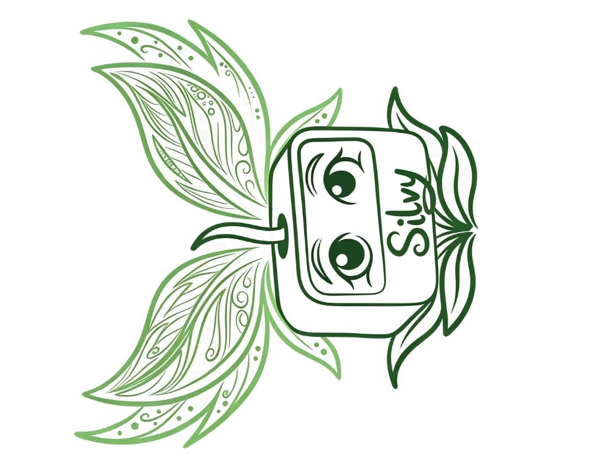

El Lenguaje Emocional de tus Plantas Silvy
Tecnología que reconecta al humano urbano con la naturaleza

Silvy
Un sistema de hardware y firmware que procesa variables biológicas críticas de tus plantas, sin necesidad de usar pantallas de teléfonos inteligentes. Un ser con voz visual.
Con el cuidado tradicional, los signos de deterioro aparecen tarde y el daño ya está avanzado. Silvy elimina esa brecha y permite que cualquier persona mantenga sus plantas saludables sin esfuerzo.
¿Cómo funciona?
Sensor BME680: Mide compuestos orgánicos y gases asociados al estrés de la planta.
Sensor Capacitivo (Sustrato): Monitorea el porcentaje de humedad directo en las raíces.
Matriz de Procesamiento: Compara datos del aire y la tierra en tiempo real para evaluar condiciones ambientales.
Alertas Clave de su Interfaz Emocional
 😌
😌
No intervenir.
 😊
😊
No intervenir.
 🤔
🤔
Ventile.
 😠
😠
Ventila el área.
 🥴
🥴
Suspenda el riego.
 🚨
🚨
¡Riegue de inmediato!
Personificación Tecnológica
Silvy convierte un objeto estático en un ser con voz visual, facilitando decisiones de cuidado preventivo óptimas sin requerir conocimientos botánicos previos.
🌱 Nuestro Compromiso
Buscamos un equilibrio ideal: un entorno donde la tecnología de precisión sirva activamente a la protección de la vida orgánica.